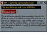

High Resolution Multimedia Timer
High Resolution Multimedia Timer
 Subclassing and Hooking with Machine Code Thunks
Subclassing and Hooking with Machine Code Thunks

Subclassing Index
|  | Moving Forms and Creating Resize Gripper BoxesThis article provides code demonstrating how to modify the behaviour of a VB form so that parts of it behave like title bars and resize borders. You can use this code to:
Last Updated: 24 November 1998 |
Detecting when another application is activatedIn a form, there is a Deactivate event. Exactly what this method is for is hard to determine, because it hardly ever seems to fire. Ok, that's perhaps a little unfair - it never fires. One thing you certainly can't detect without a bit of additional work is when the user Alt-Tabs to another application. Detecting this can be useful, for example, when you the user is performing a drag or you're showing a pop-up tool window. Last Updated: 23 November 1998 | |